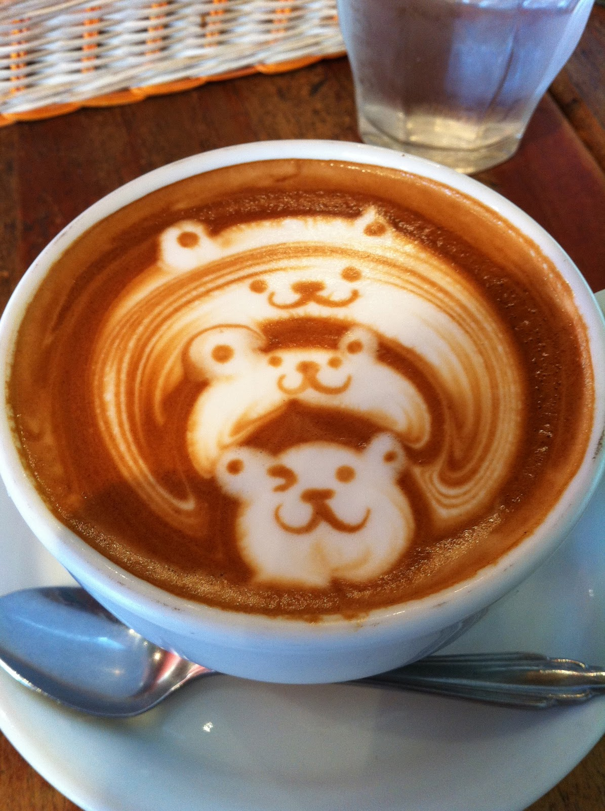

<h1>My Coffee Webpage</h1>

<p>This is my personal webpage.</p>



<h2>Hey, do you know how to make a latte?</h2>

<h2>Supplies</h2>

<ul>
<li>Espresso</li>
<li>Steamed Milk</li>
<li>Syrup (optional)</li>
</ul>

<h2>Steps</h2>

<ol>
    <li>Add espresso.</li>
    <li>Add syrup while espresso is hot.</li>
    <li>Add steamed milk.</li>
</ol>

<body>
    *Try for <a href="https://www.coffeescience.org/latte-art-beginners-guide/">latte art</a>!*
</body>